Android Auto στην οθόνη της μοτοσικλέτας σου, ασύρματα
Google Maps, Waze, Spotify και ο Βοηθός στην οθόνη της μοτοσικλέτας σου, με αυτόματη σύνδεση όταν ξεκινάς. Επιπλέον: φθηνότερα πρατήρια καυσίμων, καταγραφή διαδρομών με ρεκόρ, βίντεο με επικάλυψη ταχύτητας και εφαρμογή για ρολόι.
Δωρεάν · χωρίς διαφημίσεις · ανοικτού κώδικα · Android 10 ή νεότερο
Άμεση λήψη της τελευταίας έκδοσης · διαθέσιμη και στο GitHub · τι νέο φέρνει η v2.4

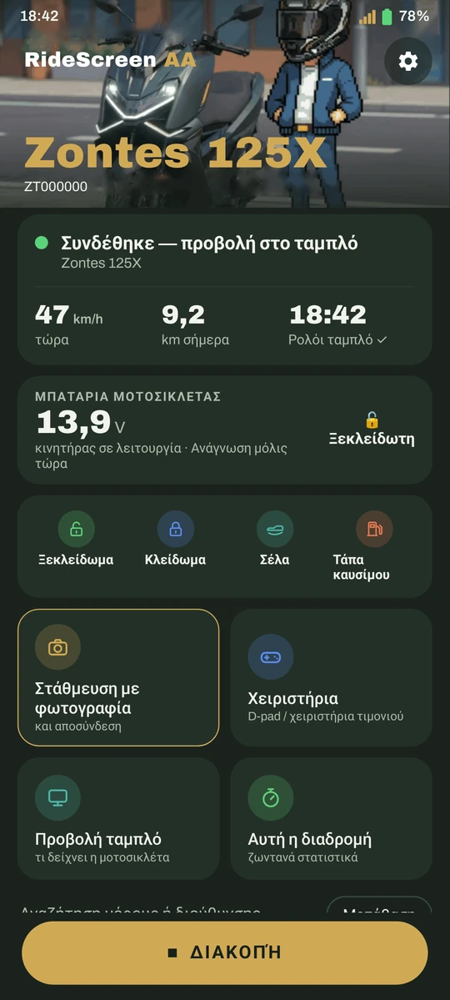
Θα λειτουργήσει στη μοτοσικλέτα μου;
Αν η οθόνη της μοτοσικλέτας σου εμφανίζει κωδικό QR για σύνδεση με το τηλέφωνο (MotoPlay / EasyConnect), είναι πολύ πιθανό να λειτουργήσει. Η εφαρμογή δοκιμάζεται καθημερινά σε Zontes 125X και βασίζεται στο OpenCfMoto, το οποίο λειτουργεί με πολλές μάρκες που χρησιμοποιούν την ίδια οθόνη.


Τι νέο φέρνει η v2.4
Το κλειδί στο κινητό, ένα dashboard με τα δεδομένα σου στον πίνακα οργάνων και δέκα γλώσσες. Δωρεάν, όπως πάντα.
Το κλειδί, στο κινητό
Ξεκλείδωμα, κλείδωμα και άνοιγμα σέλας ή τάπας ρεζερβουάρ από την εφαρμογή, πάντα με επιβεβαίωση· μετά ελέγχει πώς έμεινε η μοτοσικλέτα. Ποτέ με τη μοτοσικλέτα σε κίνηση. Widget «Χειριστήρια μοτοσικλέτας», ξεκλείδωμα κατά τη σύνδεση (προαιρετικό), το κλείδωμα τερματίζει τη διαδρομή (προαιρετικό) και το McuID διαβάζεται με την κάμερα από το QR του πίνακα.
Νέο στην 2.4Αναγνώστης OBD
Με αντάπτορα ELM327 Bluetooth, μόνο ανάγνωση: διαθέσιμα δεδομένα, κωδικοί βλαβών και ζωντανά στροφές, ταχύτητα, θερμοκρασία και γκάζι. Και συνεχής ανάγνωση κατά την προβολή: το «κινητήρας σε λειτουργία» προκύπτει πλέον από τις πραγματικές στροφές.
Νέο στην 2.4Dashboard στον πίνακα οργάνων
Αντί για το Android Auto, τα δεδομένα σου στον πίνακα: στυλ Sport, Racing και Touring, μέρα και νύχτα. Προσαρμοσμένο στην οθόνη της 125X, και η προεπισκόπηση είναι αυτό που θα δεις στη μοτοσικλέτα. Η κλίμακα των οργάνων προσαρμόζεται στη μοτοσικλέτα σου. Χωρίς OBD, η ταχύτητα προέρχεται από το GPS.
Νέο στην 2.4Διαδρομές με δεδομένα OBD
Αναπαραγωγή και βίντεο της διαδρομής με γκάζι και στροφές, και συγχώνευση διαδρομών (αναιρείται).
Νέο στην 2.4Στον πίνακα και στο παρκάρισμα
Καλωσόρισμα στην αρχή της προβολής, αποχαιρετισμός με τη σύνοψη της ημέρας και ειδοποίηση βροχής όταν παρκάρεις, για τις επόμενες ώρες εκεί που άφησες τη μοτοσικλέτα.
Νέο στην 2.4Ένταση με ενδοεπικοινωνία
Με το «Τα κουμπιά του τιμονιού ελέγχουν το Android Auto», μπορείς τώρα να κρατήσεις τα ▲/▼ για την ένταση.
Νέο στην 2.4Παλμοί από το ρολόι
Οι παλμοί του ρολογιού στην εφαρμογή (❓ Βοήθεια), κάθε 5 δευτερόλεπτα. Και η εφαρμογή του ρολογιού, μεταφρασμένη σε όλες τις γλώσσες.
Νέο στην 2.4Δέκα γλώσσες
Η εφαρμογή και το ρολόι, πλήρως σε ισπανικά, καταλανικά, αγγλικά, ιταλικά, γαλλικά, γερμανικά, πορτογαλικά, ελληνικά, ρωσικά και ταϊλανδικά.
Νέο στην 2.4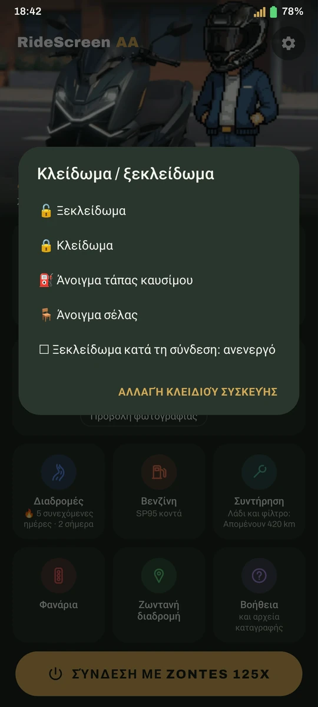
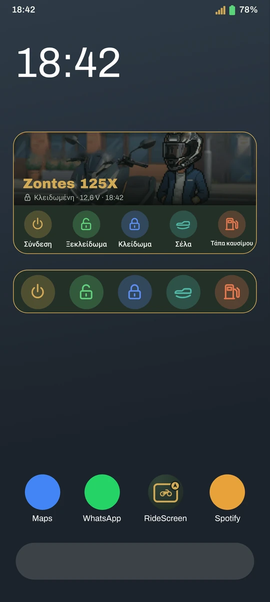
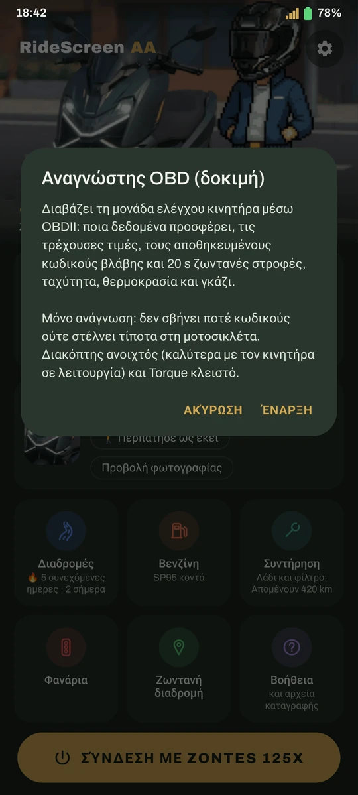
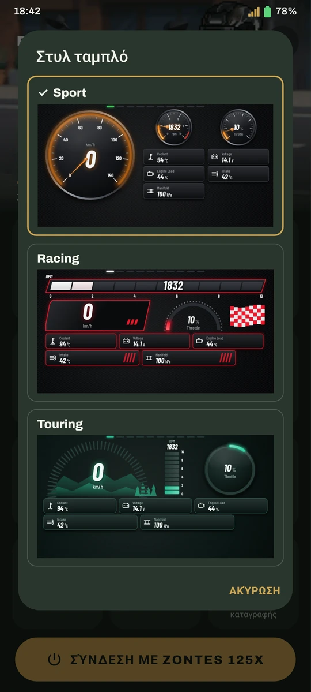
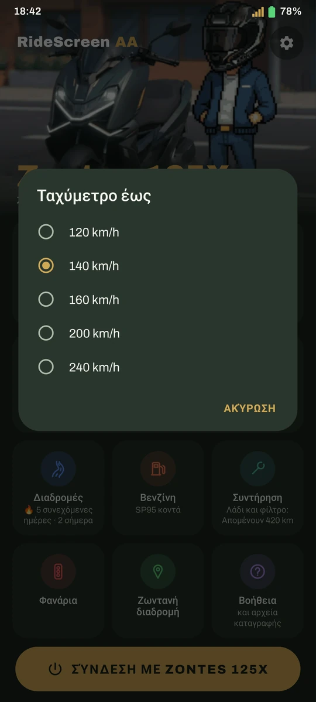
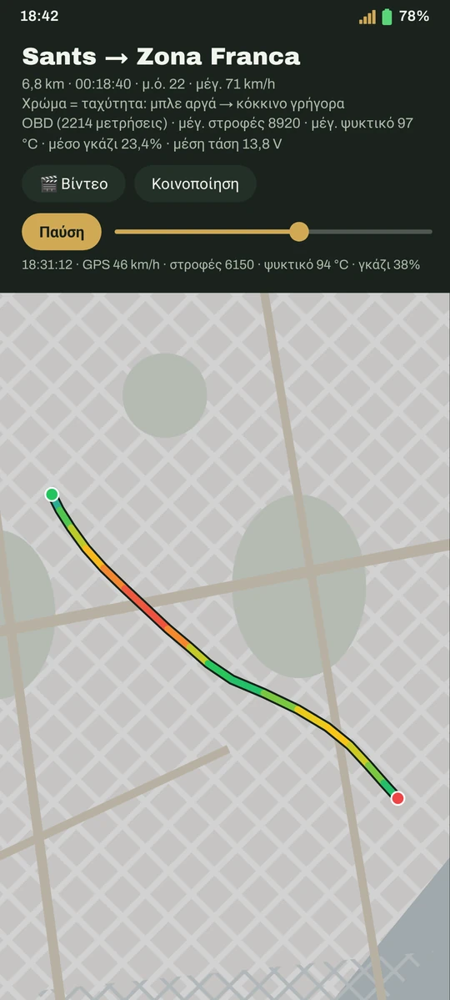
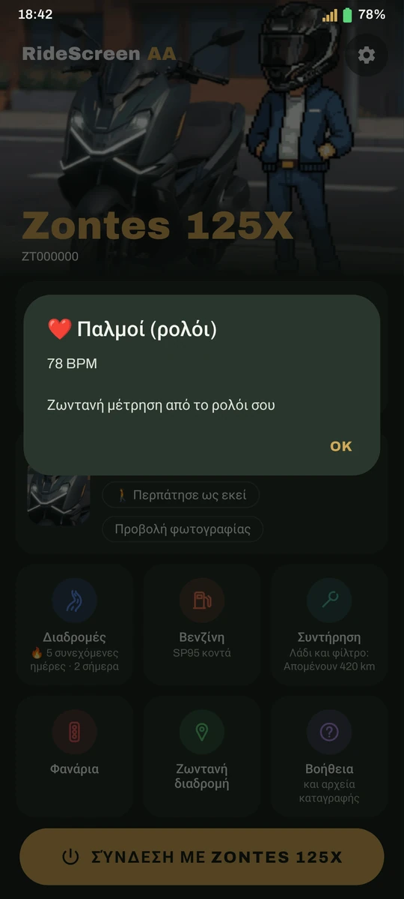


❤️ Ευχαριστούμε
Ιδιαίτερες ευχαριστίες για την 2.4:
- Melo — για τον δανεισμό του iPhone για τις δοκιμές iOS
- Inky en Moto — για τα αρχεία καταγραφής που έκαναν το T350X να λειτουργήσει και το βίντεό του για την εφαρμογή (youtube.com/@inkyenmoto)
- Luis Gil — για τη βοήθειά του με τον αναγνώστη OBD
- Όλους τους δοκιμαστές των δοκιμαστικών εκδόσεων της 2.4
Υποστηρικτές στο Ko-fi — ευχαριστούμε!
- Francisco Javier S.
- José Antonio R.
- Raul
- Luis Gil
- INKY
- Juanma M.
- Alfonsomicra
- Isra
- Dionisios S.
- José Manuel
- Karsten
- Francesc Xavier M.
- Jon
- Alberto
- Ανώνυμοι υποστηρικτές
Πολύ περισσότερα από Android Auto
Αυτόματη σύνδεση
Βάλε μπροστά τη μοτοσικλέτα και το Android Auto εμφανίζεται στην οθόνη, με το τηλέφωνο στην τσέπη σου.
Εικόνα προσαρμοσμένη στην οθόνη
Προσάρμοσε την εικόνα στην οθόνη με τα βέλη και δες αμέσως το αποτέλεσμα στη μοτοσικλέτα.
«Ok Google»
Μίλησε στον Βοηθό μέσω του intercom, του ρολογιού ή των γυαλιών σου.
Φθηνότερα καύσιμα
Επίσημες τιμές βενζίνης 95 κοντά σου και πλοήγηση μέσω Maps. Μόνο στην Ισπανία.
Οι διαδρομές σου
Κάθε διαδρομή αποθηκεύεται αυτόματα: χάρτης με χρωματισμό ανά ταχύτητα, θερμικός χάρτης, ρεκόρ και τρόπαια.
Βίντεο διαδρομής
Συνδύασε τα κλιπ σου (Ray-Ban Meta, action camera, τηλέφωνο) με χάρτη, ταχύτητα και ώρα πάνω στο βίντεο.
Τα φανάρια σου
Δες πού σταματάς συχνότερα, πόσο περιμένεις και ποια διαδρομή είναι πραγματικά πιο γρήγορη.
Πού πάρκαρα
Αποθήκευσε το σημείο και μια φωτογραφία· η πυξίδα του ρολογιού σε οδηγεί πίσω στη μοτοσικλέτα.
Συντήρηση
Λάδι, ιμάντας, τεχνικός έλεγχος και άλλα, με υπενθύμιση όταν έρθει η ώρα και καταγραφή της πραγματικής κατανάλωσης.
Ανίχνευση πτώσης
Συναγερμός στο τηλέφωνο και στο ρολόι και, αν δεν απαντήσεις, SMS με την τοποθεσία σου.
Πειραματική λειτουργίαΤο κλειδί, στο κινητό
Ξεκλείδωμα, κλείδωμα και άνοιγμα σέλας ή τάπας ρεζερβουάρ από την εφαρμογή, πάντα με επιβεβαίωση.
Νέο στην 2.4Widget «Σύνδεση»
Ένα πάτημα στην αρχική οθόνη συνδέει την εφαρμογή με τη μοτοσικλέτα, με τη φωτογραφία από το Γκαράζ σου.
Νέο στην έκδοση 2.3Λειτουργία συνεπιβάτη
Ο συνεπιβάτης επιλέγει προορισμό και μουσική και χειρίζεται το Android Auto από το δικό του τηλέφωνο.
Νέο στην έκδοση 2.3Ασφαλής αποθήκευση διαδρομών
Η διαδρομή αποθηκεύεται κάθε 30 δευτερόλεπτα ακόμη κι αν κλείσει η εφαρμογή. Μπορείς επίσης να εισαγάγεις διαδρομές GPX.
Νέο στην έκδοση 2.3Πώς φαίνεται
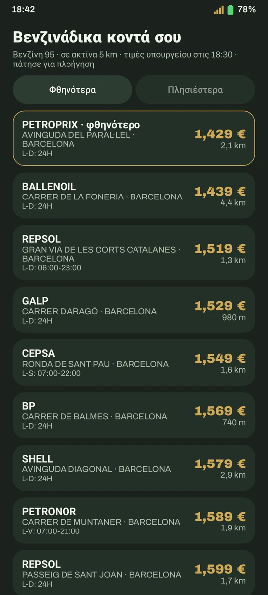
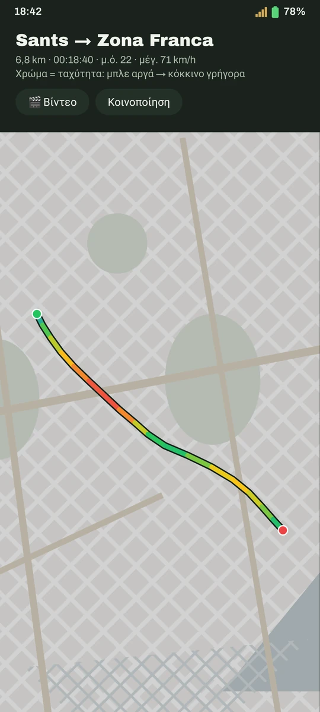
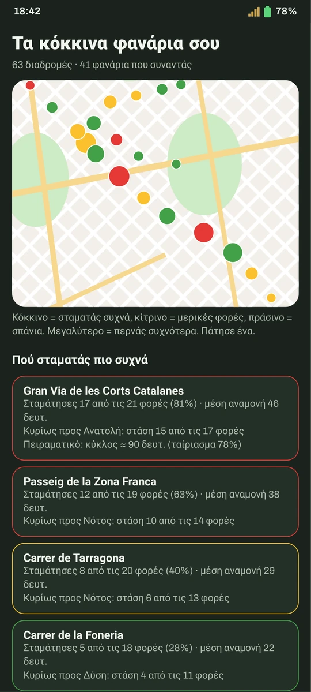
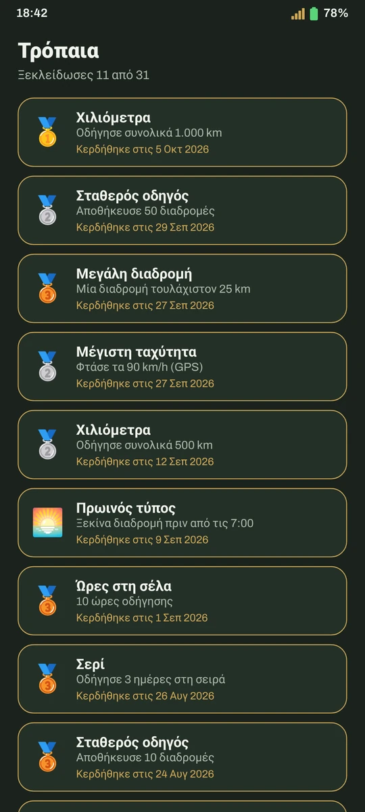
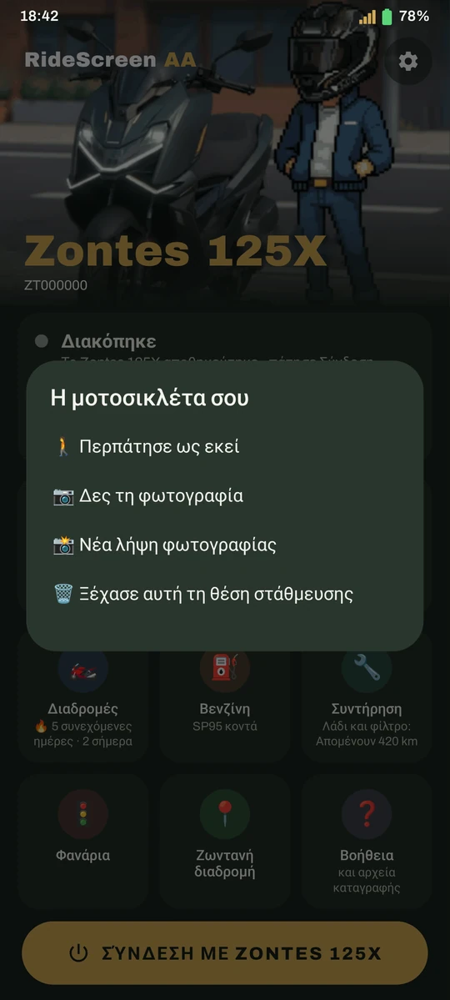
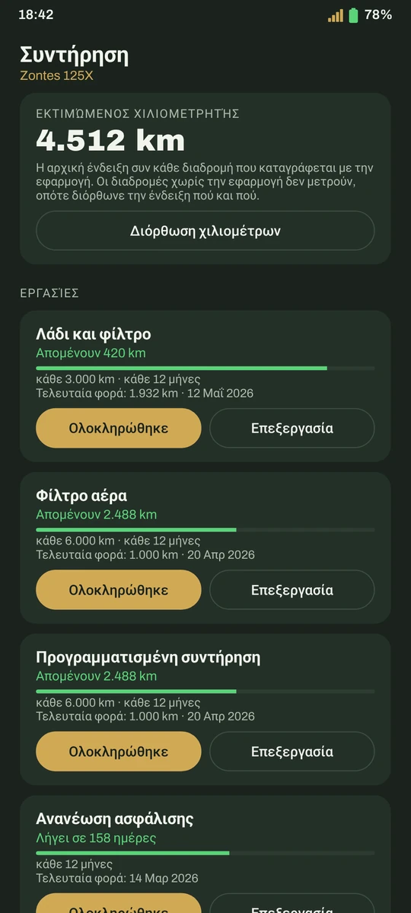
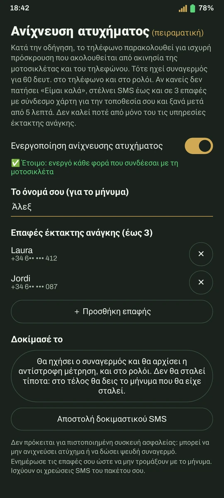

Προσαρμογή εικόνας ζωντανά στην οθόνη
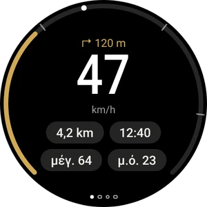
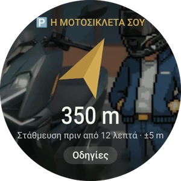
Εφαρμογή για ρολόγια Wear OS · οδηγός ρολογιού
Έτοιμο σε 10 λεπτά
Λήψη APK
Με το παραπάνω κουμπί, απευθείας (ή από το GitHub). Η ίδια η εφαρμογή θα σου προσφέρει τις επόμενες εκδόσεις.
Ρύθμιση Android Auto
Χρειάζεται μία μόνο ρύθμιση στο Android Auto. Ο οδηγός δείχνει πώς γίνεται, με στιγμιότυπα οθόνης.
Σάρωσε το QR της οθόνης
Πάτησε Σύνδεση. Από εκεί και πέρα, συνδέεται αυτόματα όταν ξεκινάς τη μοτοσικλέτα.
Συχνές ερωτήσεις
Είναι επίσημη εφαρμογή της Zontes?
Όχι. Είναι ανεξάρτητο έργο, που δημιουργήθηκε από μοτοσικλετιστή για τη δική του Zontes και μοιράζεται με την κοινότητα. Δεν συνδέεται με τις Zontes, CFMoto, Carbit ή Google.
Πόσο κοστίζει;
Είναι δωρεάν, χωρίς διαφημίσεις ή συνδρομές, και ο κώδικας είναι ανοικτού τύπου (άδεια AGPL-3.0). Αν σου φανεί χρήσιμη, μπορείς να κεράσεις τον δημιουργό έναν καφέ.
Γιατί δεν υπάρχει στο Google Play;
Η διάθεση στο Play ετοιμάζεται. Μέχρι τότε, κατέβασε την εφαρμογή από αυτόν τον ιστότοπο. Αν εμφανιστεί προειδοποίηση του Play Protect, πάτησε Περισσότερες λεπτομέρειες → Εγκατάσταση ούτως ή άλλως.
Τι γίνεται με τα δεδομένα μου?
Οι διαδρομές, οι φωτογραφίες και οι ρυθμίσεις μένουν στο τηλέφωνό σου: δεν υπάρχουν λογαριασμοί ή αποθήκευση στο cloud. Η εφαρμογή στέλνει μόνο ανώνυμες αναφορές σφαλμάτων, χωρίς στοιχεία ταυτοποίησης, για να διορθώνονται τα προβλήματα. Μπορείς να τις απενεργοποιήσεις.
Χρειάζομαι δεδομένα κινητής τηλεφωνίας;
Για χάρτες, μουσική μέσω streaming και τιμές καυσίμων, ναι, όπως και στο Android Auto ενός αυτοκινήτου. Η σύνδεση με τη μοτοσικλέτα γίνεται μέσω του δικού της Wi-Fi.
Κάτι δεν λειτουργεί. Τι να κάνω;
Δες τον οδηγό, όπου περιγράφονται τα συνηθέστερα προβλήματα. Αν συνεχιστεί, στην εφαρμογή πάτησε ❓ Βοήθεια → Κοινή χρήση αρχείων καταγραφής και στείλε τα μαζί με περιγραφή του προβλήματος.